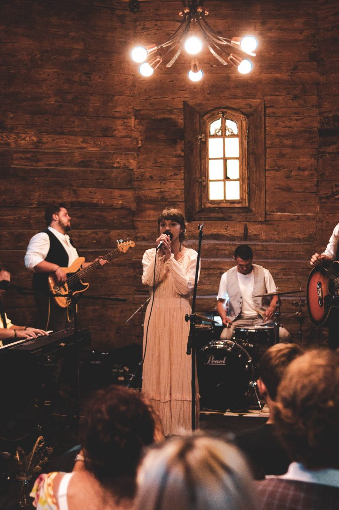

Witaj w świecie Madamme!
Przystań na chwilę. Wsłuchaj się. Słyszysz? To my, Madamme. Przyszliśmy, żeby poruszyć w Tobie strunę, o której zapominasz. Żeby przypomnieć Ci o radości, zakochaniu i szczęściu, ale też o żalu, smutku i osamotnieniu. O tym, że emocje są częścią nas. Tacy jesteśmy my i taka jest nasza muzyka.
Spotkaliśmy się we wrześniu 2016 roku dzierżąc gitarę, ukulele, bas, siedząc przy pianinie i perkusji, aby tworzyć muzykę, której punktem wyjścia jest gatunek Folk/Folk rock. Od początku wiedzieliśmy jednak, że co prawda zespoły takie jak Mumford&Sons, The Lumineers, czy Of Monsters And Men będą naszą inspiracją, ale swoją muzyczną drogę musimy odnaleźć sami.
W maju 2017 roku byliśmy gotowi, żeby pokazać swoją twórczość publiczności, co uczyniliśmy podczas Wrocławskiego Festiwalu Form Muzycznych a także kilkudziesięciu kolejnych koncertów w miejscach nierzadko oddalonych od naszych rodzinnych stron o setki kilometrów. W marcu 2018 roku dotarliśmy do finału Zimowej Giełdy Piosenki, w maju do półfinału Muzycznej Bitwy Radia Wrocław, zaś w czerwcu do finału festiwalu Emergenza. W marcu 2019 roku wróciliśmy do koncertowania po przerwie spowodowanej zmianami personalnymi w zespole i przekształceniu się z kwartetu w kwintet. W sierpniu spełniliśmy swoje marzenie o zagranicznych koncertach grając koncerty we Lwowie, w tym podczas festiwalu Sofar. We wrześniu nastąpiła także zmiana na pozycji wokalistki.
Mamy na swoim koncie wydanie czteroutworowej EPki a w planach nagranie minialbumu koncertowego a także wydanie studyjnego albumu długogrającego.
Jak dalej potoczy się ta historia? Przyjdź, posłuchaj i stań się jej częścią!